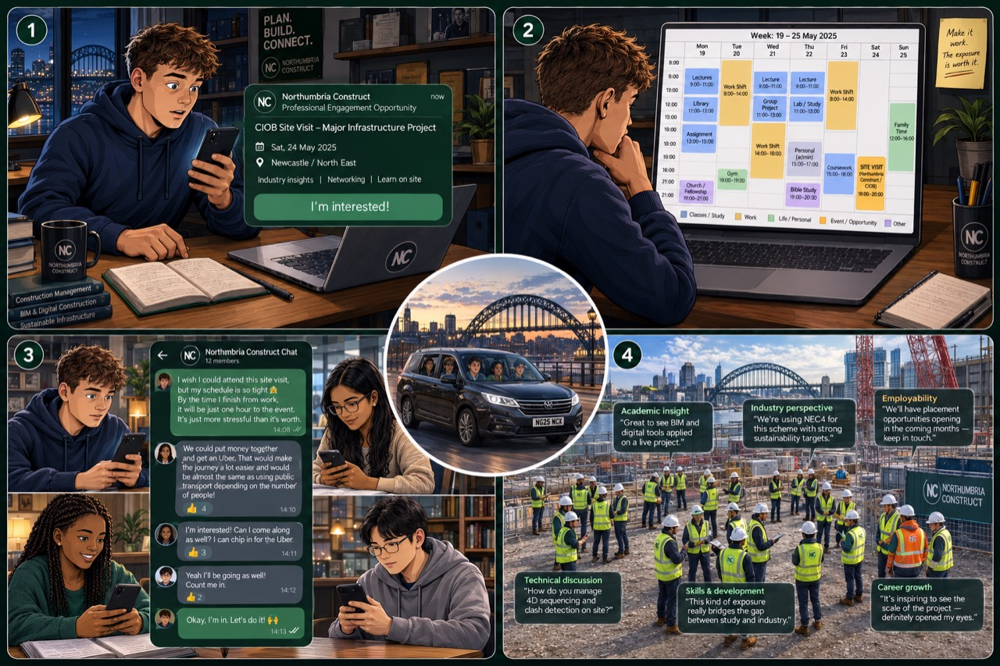

Northumbria Construct Community
A community built around
professional connection.
Northumbria Construct brings people closer to professional institutions, industry perspectives, shared learning and relevant opportunities.
The value of community · A story in two pages
What changes when information becomes shared access.
A story about moving from simply knowing that an opportunity exists to having the support and connections needed to participate.
Start here. Go everywhere.